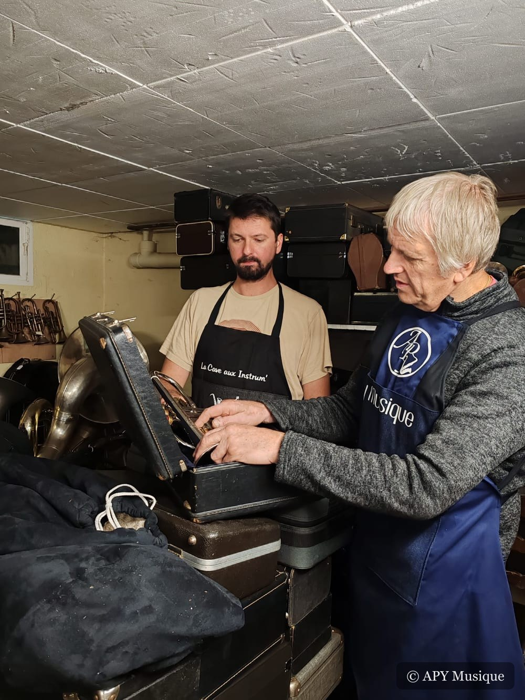
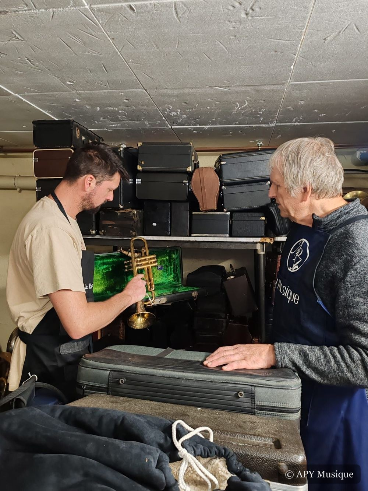

« Un instrument qui ne sonne plus, c'est presque toujours réparable. »
Amaury


Notre histoire
Un garage devenu atelier, une passion devenue métier
Tout a commencé par la passion de Jean-Michel pour les instruments à vent — du piccolo au soubassophone. Saxophoniste, il chinait, réparait, revendait. Son fils Amaury a grandi au milieu des cuivres et des établis ; il en a fait sa vie.
Tout a commencé en 1999. Ensemble, ils ont transformé leur garage de Bourg-Achard en véritable atelier, « La Cave aux Instrum' » : le point de départ. APY Musique, l'activité qu'Amaury développe aujourd'hui, en est le prolongement naturel. Loin des grandes villes et des conservatoires, ils ont choisi la campagne pour avoir la place de travailler la matière : le laiton, le bois, les cordes.
Les débuts — Jean-Michel
Un saxophoniste passionné qui sillonne la France, l'Europe et les États-Unis pour trouver de bons instruments et leur redonner leur son.
« Un bon instrument, ça se sent avant même de le jouer — j'ai fait des milliers de kilomètres pour ça. »
La transmission
Amaury apprend l'expertise au contact de son père : le choix d'un instrument, l'achat-revente, le diagnostic, le geste juste.
Aujourd'hui — Amaury à la tête de l'atelier
Amaury reprend progressivement l'activité. Là où son père réhabilite l'existant, lui refait les instruments entièrement à neuf. Jean-Michel reste à ses côtés, l'œil et la main toujours là.
La relève
Amaury Plecety
C'est lui qui vous reçoit, établit les devis et réalise l'essentiel des réparations et remises à neuf. Un interlocuteur unique, formé à l'ancienne, tourné vers l'avenir de l'atelier.
Mon saxophone n'avait pas aussi bien sonné depuis vingt ans. Amaury prend le temps d'expliquer ce qu'il fait, et le devis était exactement ce qui était annoncé.
Exemple de témoignageSaxophoniste amateur, Rouen
J'ai acheté une trompette d'étude pour ma fille. Instrument révisé, conseils précieux sur la taille et l'entretien. Un accueil de vrais passionnés.
Exemple de témoignageParent d'élève, Pont-Audemer
Un cor ancien qui traînait dans un grenier familial, revenu à la vie entre leurs mains. Père et fils, chacun sa méthode, le même souci du travail bien fait.
Exemple de témoignageProfesseur de musique, Eure
Contact
Venez à l'atelier
Le plus simple est d'appeler ou de passer. Pour une demande détaillée, écrivez-nous : Amaury vous répond sous 1 à 2 jours.